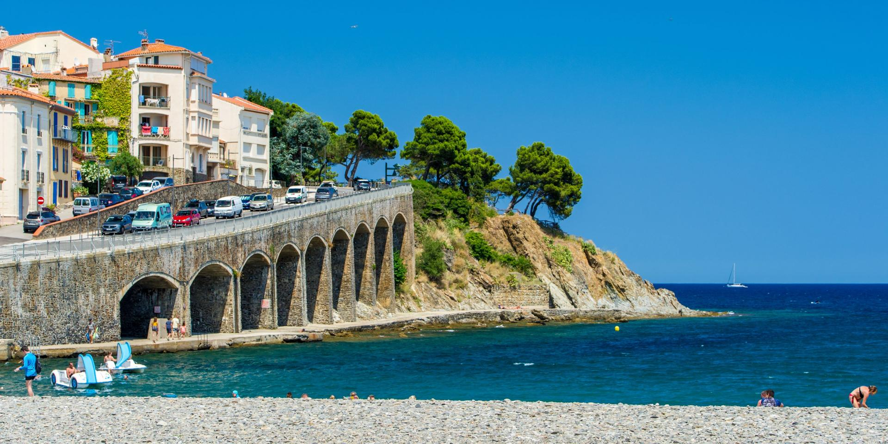

Mes Projets :
Projet de developpement d'un outil d'aide à la dessision medicale par deep learning

ü߆ Projet Deep Learning ‚Äî Diagnostic M√©dical par Radiographie Pulmonaire
Dans le cadre de notre formation Data Scientist, nous avons développé un outil d’aide au diagnostic médical automatisé, basé sur des modèles de Deep Learning. L’objectif : classer automatiquement des radiographies thoraciques dans quatre catégories (COVID-19, Pneumonie virale, Opacités pulmonaires, Normal), pour soutenir le travail des médecins et accélérer la détection des pathologies.
p>✅ Données :
Dataset open-source de plus de 21 000 radios issues de plusieurs centres médicaux internationaux.
Nettoyage avancé (doublons, flous, déséquilibres).
Augmentation d’images ciblée pour équilibrer les classes rares.
üõ† Mod√®les test√©s :
VGG19, ResNet50, MobileNet, EfficientNet (avec fine-tuning).
Utilisation de Grad-CAM pour interpréter les décisions du modèle./p>
Meilleurs résultats obtenus avec EfficientNet (93,9 % de précision globale) et MobileNet (98,7 % de précision sur les cas COVID).
p>üöÄ R√©sultat final :
p>Interface utilisateur interactive via Streamlit.
p>Modèles robustes, rapides, et interprétables.
p>Rapport de stage de Master 2 :
Poste d'ingénieur d'étude chez Plastic at Sea.
Durant cette année palpitante, tant sur le plan professionnel qu'humain, j'ai été en charge de la gestion de l'équipe technique de production de PlasticAtSea, sous la direction du Docteur Isabelle Calvès. J'ai également contribué de manière récurrente aux pôles R&D, toxicité chronique et aiguë, quantification, ainsi qu'à l'étude de la biodégradation liée aux pollutions plastiques.
Mes journées types s'articulaient autour de plusieurs missions. Tout d'abord, il était fréquent que je me rende dans les laboratoires pour transmettre à l'équipe technique les informations sur les activités en cours et recueillir leurs demandes ainsi que leurs besoins. Ensuite, mes matinées étaient souvent dédiées soit à la réalisation d'expériences, comme les tests de toxicité aiguë sur les oursins et les daphnies, soit au développement de métriques biochimiques adaptées aux attentes et exigences de nos clients. Par ailleurs, une partie significative de mon travail consistait à traiter et valoriser les données produites, que ce soit à des fins appliquées ou pour des recherches fondamentales.
Les après-midis étaient consacrés à la gestion des stocks, à l'entretien des laboratoires, ainsi qu'à des réunions avec la hiérarchie sur divers sujets (management, gestion, conception de protocoles expérimentaux, etc.). Une autre partie essentielle de mon rôle concernait l'analyse statistique et la modélisation des relations dose-réponse pour les différents couples polluants-tests étudiés.
Enfin, comme le montre ce document, j'ai eu l'opportunité de participer au colloque ECOBIM, où j'ai présenté un de nos travaux portant sur l'effet éponge des polymères plastiques le long du continuum hydrographique, en lien avec l'adsorption des polluants.
Poster effectué à la colloque ECOBIM à Banyuls-sur-mer (2024) :
Projet de développement de modèles de balances énergétiques dynamiques (DEB), de deux espèces de bivalves de Polynésie Française.

Ce projet a permis, à travers les outils développés, notamment les modèles DEB (Dynamic Energy Budget), d’apporter des éléments de réponse sur les interactions de compétition trophique entre Pinctada margaritifera et Pinctada maculata, en s’appuyant sur leur physiologie respective. Il a ainsi mis en lumière les avantages et inconvénients de chaque espèce dans ce contexte précis de compétition.
Cette expérience au sein de l’IFREMER du Pacifique a été primordiale dans ma construction intellectuelle et le développement de mes compétences actuelles. Ce projet, qui reste encore aujourd’hui l’un de mes préférés, a en effet mobilisé plusieurs aspects essentiels de la recherche.
Tout d’abord, il reposait sur l’autonomie et le développement d’une démarche scientifique personnelle. J’avais la liberté de concevoir et de choisir les expériences permettant d’incrémenter mon modèle avec des données biologiques pertinentes.
Mon sujet combinait modélisation, recherche bibliographique, mesures bio-physiologiques et aquariologie, ce qui m’a offert une vision globale de ma problématique et m’a permis d’y répondre avec un maximum d’éléments.
Ce projet m’a également donné l’opportunité de présenter mes travaux aux différents acteurs concernés (chercheurs, agents des parcs marins et perliculteurs). Cette diversité d’auditoires m’a appris à adapter mon discours en fonction des interlocuteurs et de leurs attentes spécifiques.
Enfin, un de mes collègues, étudiant en science des données, m’a initié à cette discipline, qui constitue aujourd’hui un outil fondamental dans mes recherches actuelles.
Je vous invite donc à lire le rapport de ce stage pour en découvrir les détails et les résultats.
Rapport de stage de Master 2 :
Projet SIG : L'antartique un continent primordial

Ici un travail pousser d'interprétations de données nevironnementales notamments à travers des outils SIG
Projet de stage sur la compréhension des impacts d'une exposition chronique aux microplastiques, couplée ou non au réchauffement des eaux, sur l'holobionte d'une espèce de corail.
Le but de ce projet était de produire et d’analyser des données suite à une exposition chronique, sous différentes concentrations de plastiques et de températures, des compartiments énergétiques de l'holobionte de Stylophora pistillata.
Ma participation à cette étude consistait à étudier les compartiments énergétiques de l’holobionte de cette espèce symbiotique. Cette immersion totale dans le monde scientifique, ainsi que mes rencontres avec des chercheuses et chercheurs passionnants, m’a permis de développer mon esprit critique, mes compétences en écotoxicologie et ma passion pour la recherche.
Je vous invite donc à consulter le poster présentant ma participation à ce projet.
Poster de stage de Master 1 :
Projet de l'étude d'impact d'un tronçon de la Restonica à travers la présence d'espèces d'invertébrées aquatiques sentinelles.

L'introduction au fonctionnement d'un bureau d'études en hydrobiologie a été le thème central de ce projet, à travers la réalisation d'un Indice Biologique Global (IBG) dans la Restonica. D’autres actions ont également été menées avec ce bureau d'études, telles que le carottage de pozzines et la pêche électrique. J’ai eu, en effet, la chance de pouvoir participer à plusieurs missions de terrain durant mes trois années de licence à l’Université de Corse, notamment avec le laboratoire d’hydrobiologie et le bureau d’études SO Consultant, en collaboration avec Antoine et Sophie Orsini.
Rapport de stage de Licence :